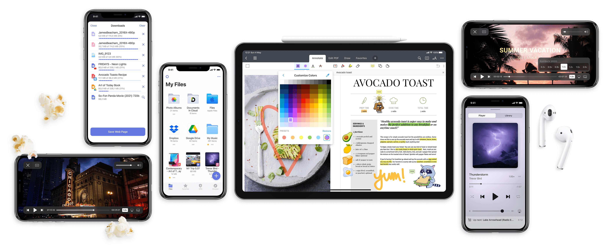
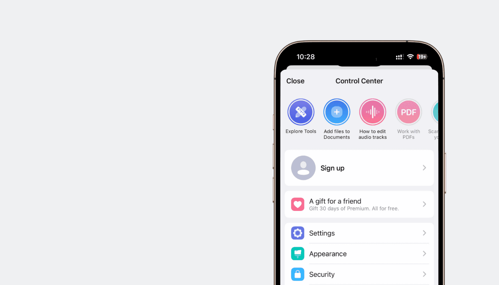
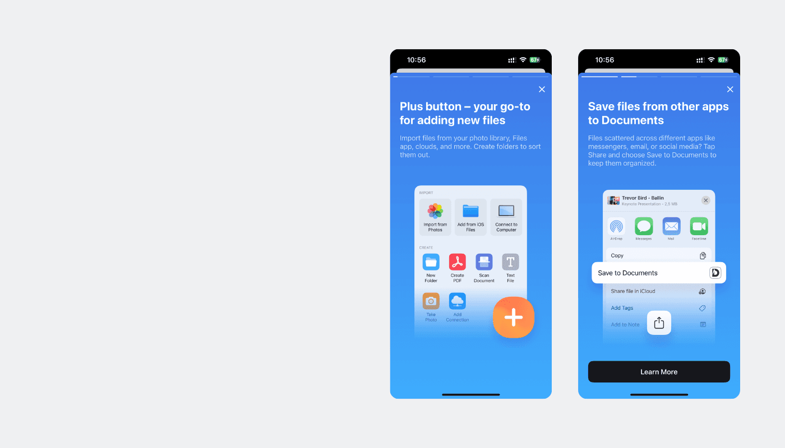
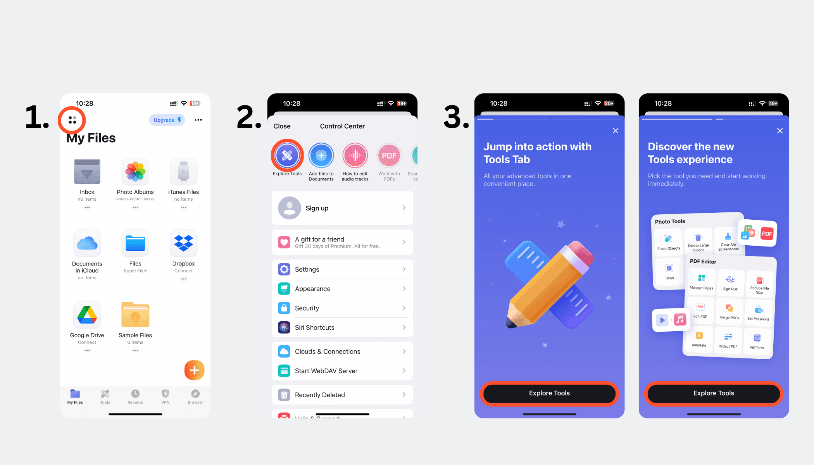

How Readdle improved their activation by 70% with stories

Readdle, a leading tech company, creates productivity apps for Apple devices. Founded in 2007, it started with enabling book reading on the iPhone. With 10M+ monthly users, including scientists, professionals, students and content creators.
Readdle's Documents app transformed from a file manager into a "super app" that simplifies digital workflows with file management, media playback, editing, cloud storage, and VPN—all in one place.
That's why short videos are coming into the game. With visuals, snappy storytelling, and clear messaging, they effectively hold attention, boost engagement, and improve understanding. We spoke with Max Harbuz, a Product Manager at Readdle, to gain insights into how Stories boosted the activation of the Documents app and much more.
Why Stories?
As a Multitool, Documents is a complex product and that's why many users found it hard to navigate all its features. While some installed Documents for a specific purpose, like PDF editing or file storage, others couldn't immediately understand everything the app could do.

So what did they do about it?
Challenge#1: Time to Value

If users don't quickly understand the app's value, they may stop using it. Traditional onboarding methods like long guides or help articles can be ineffective, as users often skip them.
Solution: Stories provided quick, visual explanations that seamlessly fit into the user experience. Instead of overwhelming users with text-heavy guides, Stories offered short, intuitive tutorials that both educated users and acted as shortcuts to key features, improving navigation and engagement.
Challenge#2: Onboarding New Users

New users often find navigating the app difficult, unlike power users who have been using it for years. The onboarding process needed to be accessible to a diverse audience, including those less experienced with technology.
Solution: Stories acted as visual hints that helped new users learn the app without disrupting their workflow. Unlike traditional onboarding flows that users might skip and never revisit, Stories remained accessible for future reference. Their familiar format also made them an intuitive learning tool, ensuring users could return to them whenever they needed guidance.
Challenge#3: Feature Promotion
Promoting paid features without annoying users is tricky. Traditional ads or pop-ups often disrupt the user experience, leading to frustration.
Solution: Stories subtly introduced premium tools like PDF handling, file conversion, and VPN services. Paid users could instantly access the features, while non-subscribers encountered a paywall. This blended training with promotion, ensuring users discovered valuable features in an organic, non-intrusive way.
Challenge#4: Communicating App Updates
Text-based explanations of app updates weren't engaging, and users often ignored them. The team needed a more effective way to communicate changes and new features.
Solution: Stories transformed update announcements into interactive and engaging experiences. Inspired by other Readdle products, this approach made it easier for users to stay informed without feeling overwhelmed, ensuring they remained up to date with the latest features and improvements.
Unexpected bonus: Stories as a Navigation Shortcut
Before introducing the Tools tab, many users—especially new ones—used Stories as a shortcut to access key features. Instead of searching for a function within the app, they found it easier to:

- Open Settings
- Tap on a Story
- Click the button inside to navigate to a feature
This behavior was unexpected but highlighted how Stories helped with discoverability and onboarding. While experienced users eventually learned where to find features, new users relied on Stories to quickly access functionalities they weren't yet familiar with.
This insight suggests that Stories can bridge the gap between feature awareness and ease of access, making them useful not just for discovery but also for navigation within the app.
…but there were challenges:
1️⃣ Making Stories Discoverable
To keep the main screen clean and uncluttered, Stories were placed in Settings, accessible only by tapping the four dots in the upper left corner. This made them harder to find, so the team tackled the issue by adding a red dot indicator. This small but effective tweak made the button interactive, signaling to users that something new was waiting for them in Settings.
2️⃣ Changing User Perception
Let's be honest—when people think of a file manager, "exciting" isn't the first word that comes to mind. Some users wondered, "What do Stories have to do with a file manager?" The goal was to break that perception and bring a bit of fun into the experience. And it worked! Stories added an engaging touch to learning about new features, proving that even a file manager can be dynamic and interactive 🚀
The results:
1. User Interaction with Stories
Despite being hidden in the Settings menu, Stories achieved a conversion rate of over 50%, with some features reaching 70%—higher than any other part of the app. Initially, the team expected only 1% of active users to engage with Stories, but the results far exceeded expectations, with around 100,000 users viewing them. This showed that Stories were more relevant to the Documents audience than originally anticipated.
2. Feature Activation Through Stories
Stories didn't just inform users—they encouraged them to try new features. The team estimated a possible activation increase between 10% and 100%, and the results confirmed this:
- Scanner feature: Expected 100% increase, achieved 40%.
- File transfer: Estimated 10-15%, but saw a 70% increase.
- Audio editing: Overall activation didn't grow as expected, but for new users, it increased by 30%, exceeding the original estimate.
3. Overall Retention Impact
Since Stories were placed in Settings, they were mainly seen by power users with already high retention rates. While it's unclear if Stories directly influenced retention, data showed that users who engaged with them were 7-10% more likely to revisit Settings later.
Even when some Stories had a less intuitive flow simply making users aware of a feature helped increase engagement, especially among new users.
Readdle's takeaways:
Stories are not exclusive to B2C
Stories aren't just for social media—they can work for B2C and complex apps too. They can enhance not just user engagement but also clarity in communication and feature activation. Users know this format, so integrating Stories can be a smooth, non-intrusive way to hold users' attention and even direct them toward certain app features.
Never stop posting
The effect of novelty drives initial engagement; however, long-term success for Stories requires that they receive regular updates. This signals to users that the app is still in active development and is trustworthy, leading to increased user retention.
Different content for each segment
If your app has well-defined user segmentation, you can create highly effective, personalized Story content for different users. You can also test different content with various users to see what performs best.